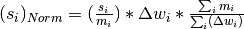

NormaliseToMonitor dialog.
Table of Contents
Normalizes a 2D workspace by a specified spectrum, spectrum, described by a monitor ID or spectrun provided in a separate worskspace.
| Name | Direction | Type | Default | Description |
|---|---|---|---|---|
| InputWorkspace | Input | MatrixWorkspace | Mandatory | Name of the input workspace. Must be a non-distribution histogram. |
| OutputWorkspace | Output | MatrixWorkspace | Mandatory | Name to use for the output workspace |
| MonitorSpectrum | InOut | number | -1 | The spectrum number within the InputWorkspace you want to normalize by (It can be a monitor spectrum or a spectrum responsible for a group of detectors or monitors) |
| MonitorID | Input | number | -1 | The MonitorID (pixel ID), which defines the monitor’s data within the InputWorkspace. Will be overridden by the values correspondent to MonitorSpectrum field if one is provided in the field above. If workspace do not have monitors, the MonitorID can refer to empty data and the field then can accepts any MonitorID within the InputWorkspace. |
| MonitorWorkspace | Input | MatrixWorkspace | A workspace containing one or more spectra to normalize the InputWorkspace by. | |
| MonitorWorkspaceIndex | InOut | number | 0 | The index of the spectrum within the MonitorWorkspace(2 (0<=ind<=nHistograms in MonitorWorkspace) you want to normalize by (usually related to the index, responsible for the monitor’s data but can be any). If no value is provided in this field, ‘’‘InputWorkspace’‘’ will be normalized by first spectra (with index 0) |
| IntegrationRangeMin | Input | number | Optional | If set, normalization will be by integrated count from this minimum x value |
| IntegrationRangeMax | Input | number | Optional | If set, normalization will be by integrated count up to this maximum x value |
| IncludePartialBins | Input | boolean | False | If true and an integration range is set then partial bins at either end of the integration range are also included |
| NormFactorWS | Output | MatrixWorkspace | Name of the workspace, containing the normalization factor. If this name is empty, normalization workspace is not returned. If the name coincides with the output workspace name, _normFactor suffix is added to this name |
In this, the default scenario, each spectrum in the workspace is normalised on a bin-by-bin basis by the monitor spectrum given. The error on the monitor spectrum is taken into account. The normalisation scheme used is:

where  is the signal in a bin,
is the signal in a bin,  the count in the
corresponding monitor bin,
the count in the
corresponding monitor bin,  the bin width,
the bin width,
 the integrated monitor count and
the integrated monitor count and
 the sum of the monitor bin widths. In words,
this means that after normalisation each bin is multiplied by the bin
width and the total monitor count integrated over the entire frame, and
then divided by the total frame width. This leads to a normalised
histogram which has unit of counts, as before.
the sum of the monitor bin widths. In words,
this means that after normalisation each bin is multiplied by the bin
width and the total monitor count integrated over the entire frame, and
then divided by the total frame width. This leads to a normalised
histogram which has unit of counts, as before.
If the workspace does not have common binning, then the monitor spectrum is rebinned internally to match each data spectrum prior to doing the normalisation.
If a bin in the monitor spectrum contains 0 counts there is no special treatment, only a warning is logged. The following options are available to deal with the issue:
This mode is used if one or both of the relevant ‘IntegrationRange’ optional parameters are set. If either is set to a value outside the workspace range, then it will be reset to the frame minimum or maximum, as appropriate.
The error on the integrated monitor spectrum is taken into account in the normalisation. No adjustment of the overall normalisation takes place, meaning that the output values in the output workspace are technically dimensionless.
The data must be histogram, non-distribution data.
The ExtractSingleSpectrum v1 algorithm is used to pull out the monitor spectrum if it’s part of the InputWorkspace or MonitorWorkspace. For the ‘integrated range’ option, the Integration v1 algorithm is used to integrate the monitor spectrum.
In both cases, the Divide v1 algorithm is used to perform the normalisation.
Note
To run these usage examples please first download the usage data, and add these to your path. In MantidPlot this is done using Manage User Directories.
Example - Normalise to Monitor ID=1
ws =Load('IRS26173.raw')
wsN = NormaliseToMonitor( ws, MonitorID=1 )
print "Without normalisation"
print "Monitor ID=1 %.3f, %.3f" % ( ws.readY(0)[0], ws.readY(0)[1] )
print "Selected data %.6f, %.6f" % ( ws.readY(6)[0], ws.readY(3)[1] )
print "With Normalisation"
print "Monitor ID=1 %.3f, %.3f" % ( wsN.readY(0)[0], wsN.readY(0)[1] )
print "Selected data %.6f, %.6f" % ( wsN.readY(6)[0], wsN.readY(3)[1] )
Output:
Without normalisation
Monitor ID=1 626034.000, 626681.000
Selected data 2.000000, 1.000000
With Normalisation
Monitor ID=1 464872.441, 464872.441
Selected data 1.485135, 0.741801
Categories: Algorithms | CorrectionFunctions\NormalisationCorrections